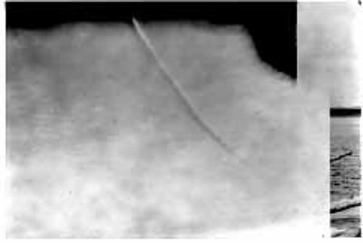

Un certain nombre de signalements d'objets volents non-identifiés vient d'observateurs qui, en
raison de leur parcours et expérience technique, ne semblent pas influencés par un sensationalisme infondé ni
enclins à signaler des phénomènes explicables comme étant de nouveaux types d'appareils aériens. Certains détails de
leurs signalements sont présentés dans cette annexe, ainsi que ceux de sources potentiellement moins fiables ayant
rapporté des éléments d'une nature telle qu'ils ne peuvent être entièrement ignorés.
Les descriptions d'incidents significatifs, arrangés chronologiquement, suivent :
En avril1947, 2 employés de la Station du Bureau Météo de Richmond (Virginie)
rapportèrent avoir vu un disque métallique étrange en 3 occasions à travers le théodolite alors qu'ils
effectuaient des observations PIBAL. Une observation fut à 15 000 pieds lorsqu'un disque fut suivi pendant 15 s.
Le disque paraissait métallique, d'une forme ressemblant à une ellipse avec une base plate et un sommet arrondi.
Il apparut sous le ballon et était bien plus
grand en taille. Le disque semblait se déplacer assez rapidement, bien qu'il fut impossible d'estimer sa
vitesse. Les autres observations furent faites à 27 000 pieds d'une façon similaire.
Le mois suivant, Byron B. Savage, un ingénieur de terrain pour Radio Corporation of America,
signala un disque volant près de chez lui à Oklahoma City (Oklahoma). L'objet fut
estimé être à une altitude de 10 000 à 18 000 pieds, et se déplaçait vers le nord à très grande vitesse, sans
laisser de traînée apparente.
Alors qu'il volait à 10 000 pieds sur une course de 300 °, à 30 miles au nord-ouest de Lake Meade (Nevada), un lieutenant de la Force Aérienne rapporta avoir vu 5 ou 6 objets
circulaires blancs en formation serrée voyageant à une vitesse estimée de 285 miles/h. Cette observation eut
lieu le juin1947.
Le jour suivant, un groupe de 3, dont 2 scientifiques, roulent sur la route 17 vers les sites de
lancement de V-2 de White Sands (Nouveau Mexique)
et signalent avoir vu un grand disque ou une grande sphère se déplacer horizontalement à grande vitesse et une
altitude estimée à 10 000 pieds. Il était de forme uniforme et n'avait pas de surfaces saillantes telles que des
ailes. L'objet fut en vue pendant 60 s environ avant de disparaître au nord-est. Les 3 observateurs s'accordent
sur les détails de l'observation à l'exception d'un qui dit avoir vu des traînées de vapeur.
Le 7juillet 1947, 5 officiers de police de
Portland (Oregon) signalent divers nombres de disques volant au-dessus de différentes
parties de la ville. Toutes les observations furent faites en 1 ou 2 mn autour de .
Le même jour, William Rhoads de Phoenix (Arizona) aurait vu un disque faire le tour de sa localité au crépuscule et
pris 2 photographies. Les images résultantes (page 9) montrent un objet à l'apparence de disque à l'avant
rond et une queue carée de forme plane. Ces photographies ont été examinées par des experts indiquant qu'il
s'agit de photographies authentiques qui ne semblent pas être le résultats de défauts dans l'émulsion ou
dans l'objectif (voir figs. 1, 2, 3 et 4). PHOTOGRAPHIES ORIGINALES PAR M. RHOADS
Fig. 1
Fig . 2
AGRANDISSEMENTS DE PHOTOGRAPHIE ORIGINALE
Fig. 3
Fig. 4
Le juillet1947, M.
Woodruff, un mécanicien de Pan-American Airways signala un objet circulare volant à grande vitesse,
parallèlement à la surface terrestre et laissant une traînée ressemblant à un "enflammement" de la formation
nuageuse. L'observation eut lieu près de Harmon Field, dans le Newfoundland. 2 autres personnes virent aussi la
traînée qui resta dans le ciel pendant près de 1 h et fut photographie par un autre employé de PAA. Les
photographies résultantes étayent l'observation de M. Woodruff pour ce qui est de la division dans le ciel (voir
figs, 5 et 6).
Fig. 5  Fig. 6
Le juillet1947, Kenneth Arnold, alors qu'il volait près de Tacoma (Washington),
signala une formation d'objets volants.
Le croquis de leur forme correspond de près à celui montré dans les photographies de M. Rhoads. Le même jour, 2
pilotes de l'USAF à Hamilton Field rapportèrent avoir vu 2 disques volants
derrière un P-80, le suivant vers Oakland (Californie).
Le août1947, le pilote et le co-pilote of a DC-3, volant
pour un certain Al Jones, près de Bethel (Alaska), signala un disque volant plus grand que leur appareil. Ce
disque coupa leur trajectoire à environ 1000 pieds et ils virèrent pour le prendre en chasse. Le DC-3 volait à
170 miles/h, mais le disque fut hors de vue en 4 mn.
Le novembre1947, 2
disques volants laissant des traînées de feu semblables à celles de réacteurs auraient été observés depuis le
pont du navire-citerne Ticonderoga, selon le 2nd officier. Le Ticonderoga se
trouvait à 20 miles au large de la côte de l'Oregon. Cet officier dit que les disques furent en vue pendant
45 s, se déplaçant à une vitesse estimée entre 700 et 900 miles/h, faisant une longue courbe basse.
Le janvier1948, un pilote de la Garde Nationale fut
tué en tentant de prendre en chasse un objet
non-identifié jusqu'à 30 000 pieds. Alors qu'il est présumé que ce pilote a souffert d'anoxie, résultant en ce crash, son dernier message à la
tour fut, Ca a l'air d'être un objet metallique... de taille incroyable... juste devant et un peu
au-dessus... J'essaie de me rapprocher pour mieux voir.
Le 5 avril 1948, 3 observateurs de
ballon expérimentés de la Section du Laboratoire de Géophysique, des Laboratoires Watson, au New Jersey,
signalèrent avoir vu un objet rond indistinct dans les environs de la base aérienne de Holloman, au Nouveau
Mexique. Il était très haut et rapide, et semblait executer de violentes manoeuvres à grande vitesse. L'objet
fut sous observation pendant à peu près 30 s et disparut soudainement.
Une sphère jaune ou de couleur claire, de 25 à 40 pieds de diamètre fut signalée par le lieutenant
Comdr. Marcus L. Lowe, de la Marine américaine, juste au sud de la Station Aéro-Navale d'Anacostia (D.C.), alors
qu'il volait le avril 1948. Elle se déplaçait à une vitesse d'a peu près 100 miles/h à une
altitude d'environ 4500 pieds. Bien que les vents d'altitude venaient du nord-nord-ouest, sa course était vers
le nord.
Le 1erjuillet1948, 13 disques furent signalés au-dessus de la base aérienne de Rapid
City par le major Hammer. Ces disques étaient de forme ovale, d'environ 100 pieds de long, volant à une vitesse
estimée dépasser les 500 miles/h. Descendant depuis 10 000 pieds, ces disques firent un virage ascensionnel de
30 ° à 40 ° en accélérant très rapidement jusqu'à être hors de vue.
Le juillet1948, un rapport de la base
aérienne de Kirtland décrit une observation dans les environs de San Acacia (Nouveau Mexique)
de 7 objets non-identifiés volant en formation en "J" à une altitude estimée à 20 000 pieds au-dessus du
terrain. La formation varia du "J" au "L" puis au cercle après être passés au zenith. Des reflets lumineux des
objets furent observés après qu'ils aient dépassé 30 ° au-delà du zenith mais il n'y avait aucune fumée ni
traînée de vapeur. Si l'altitude rapportée est correcte la vitesse serait estimée à 1500 miles/h, selon le
rapport.
D'autres observations de lumières et traînées, plutôt que des disques, ont été signalées, à savoir :
Le septembre1947, les pilote et co-pilote d'un appareil de la Pan-American, en route de Midway à
Honolulu, virent une lumière blanc-bleu approcher, et se changer en 2 lueurs rougeâtres jumelles avant de
s'en aller. Le pilote estima la vitesse de la lumière à 1000 noeuds
environ.
Le juin1948, M. Booneville, responsable de
territoire pour la société B. F. Goodrich, observa une lueur rougeâtre avec un échappement à
réaction dans les environs de Miles City (Montana). Cette lumière luisante
n'émettait aucun son, voyageait à près du double de la vitesse d'un appareil conventionnel et vola du nord
au sud plusieurs fois selon un large arc, pour finalement disparaître au-dessus de l'horizon.
Aux premières heures du matin du juillet1948, 2 pilotes de Eastern Airlines disent avoir vu un énorme appareil volant
semblable à un V-2 dépasser leur appareil en plein vol
(voir figs. 7 et 8). Les dessins attachés faits par ces 2 observateurs ressemblent beaucoup à un objet volant
signalé avoir été vu le juillet1948, par A. D. Otter ( enquêteur-en-chef de la
Cour d'Enquêtes Dommages) et sa fille à Arnham (Pays Bas). Cet objet semblait être un
appareil sans ailes ayant 2 ponts. L'appareil, observé 4 fois au milieu de nuages épars et avec une visibilité
illimitée, voyageait à grande vitesse et haute altitude. Un son semblable à celui d'un V-2 fut signalé.
Un objet, de forme semblable à celle de l'incident précédent fut signalé par le journaliste
expérimenté d'un journal américain à 25 km environ au nord-est de Moscou le août1948. Une connaissance
russe l'identifia comme étant un dirigeable rigide mais le journaliste n'est pas d'accord parce qu'il volant à
une vitesse élevée, mais non excessive.
Le 1eroctobre1948 , le pilote d'un
appareil F-51, le 2nd lieutenant George F. Gorman (de la garde nationale aérienne du Dakota du Nord), volant près de
Fargo (Dakota du Nord), observe une lumière blanche intermittente à environ 3000 pieds sous son altitude de
croisière de 4500 pieds. Le pilote poursuit la lumière qui semble adopter des
tactiques évasives. L'objet ou la lumière distanca le F-51 en virant, allant plus vite, et monta plus haut à
chaque fois durant la tentative d'interception. Le pilote perd le contact
27 mn après l'observation initiale. La même lumière fut observée par 3 autres témoins depuis le sol : M. L. D. Jensen (contrôleur de traffic aérien), M. Manuel E. Johnson
(contrôleur de traffic assistant) et le Dr. L. N. Cannon (oculiste). Une
comparaison de tous les témoignages révéla qu'un objet avait été observé et qu'il ne consistait qu'en une petite
boule de lumière blanche claire sans forme apparente attachée. Elle faisait netre 6 et 8 pouces de diamètre.
Parfois elle se déplaçait plus vite que le F-51 et
entreprenait des manoeuvres évasives. Lorsqu'elle fut observée pour la 1ère fois la boule de lumière
se déplaçait à 250 miles/h estimés. Dans cette condition, la lumière n'était pas continue mais clignotait. A
grande performance la lumière blanche était continue. Une enquête ultérieure élimina la possibilité que cet
incident puisse avoir été un autre appareil ou un ballon météorologique
Fig. 7
Fig.
8
Le novembre1948 , 3 pilotes de
reserve, le 2nd lieutenant Kenwood W. Jackson, le 2nd
lieutenant Glen L. Stalker et le 2nd lieutenant Henry G. Combs,
volant près de la base d'Andrews (Maryland), rencontrèrent un objet volant non-identifié. Lorsqu'il fut observé
pour la 1ère fois, il semblait être illuminé et voler à 1700 pieds environ. 3 ou 4 passes furent
faites pour tenter de l'identifier. Le pilote de l'appareil déclara qu'alors
qu'ils plongeait son appareil à environ 240 miles/h, l'objet était monté verticalement puis était tombé sous
l'appareil depuis derrière et avait continuer de tourner. Lors de la dernière passe, le feu d'atterrissage était
allumé et momentanément une lueur gris terne fut observée sur l'objet. Le lieutenant Combs déclara avoir maintenu le contact pendant environ 10 mn avec l'objet volant
entre les lumières de Washington (D.C.) et son appareil. Tout ce qui put être observé fut une boule oblongue
avec une lumière, sans ailes ni flamme d'échappement. Elle finit par faire un virage très serré et se dirigea
vers la côte est à une vitesse estimée entre 500 et 600 miles/h. Au même moment le sergent-chef John J. Kushner observa depuis le sol un objet inhabituel dans les airs au-dessus de
la base d'Andrews. Il déclara qu'il n'était pas très haut et que ça ne ressemblait pas à un avion.
Des rapports d'interceptions radar intercepts point to unusual air activity which may be related
to flying objects.
Le 1erjuillet 1947, un radar de contrôle d'approche à Hokkaido (Japon) repéra une cible
non-identifiée à 16 miles, avec une vitesse dépassant les 500 miles/h. Cette cible se divisa en 2, chacune
estimée être plus grande qu'un P-51.
Le septembre1947, un radar MEW à Fukuoka (Japon) repéra
une cible à 89 miles et suivi sa trace sur 19 miles, où elle s'évanouit. La vitesse était de 840-900 miles/h. La
mesure de vitesse, faite par une bonne équipe sur un suivi de 70 miles, est considérée précise.
Des enquêtes menées par le Quartier Général du Commandement du Matériel de l'Air ont établi catégoriquement
l'identification de 18 d'environ 210 soucoupes volantes
supposées ayant été signalées. A peu près 9 % du nombre total d'incidents sont, par conséquent, éliminés de tout
examen spécifique supplémentaire. Parmi ces incidents catégoriquement expliqués, 3 étaient des canulars, 2 étaient de témoins non fiables.
Dans les 13 incidents éliminés restants, des objets furent effectivement vus mais l'enquête a montré qu'il
s'agissait de corps ou phénomènes célestes, de ballons météorologiques et de carnaval, et d'équipement expérimental
aérien pour les rayons cosmiques. Les exemples suivants sont présentés pour comparaison des informations rapportées
par les témoins et la véritable identification des objets impliqués :
Le juillet1948, le capitaine Henry Glover (ordonnance de
réserve) et sa femme observent à Van Nuys (Californie) un objet qu'ils sont incapable d'identifier
catégoriquement. L'objet semble tout d'abord être rond et ressembler à un ballon météo à 2000 pieds environ mais il
n'y avait pas de mouvement caractéristique. Le vent soufflait au sol mais l'objet était plutôt stable. Pendant
le moment où il fut sous observation, environ 1 h, il se déplaça selon un arc vertical d'environ 25 ° ou plus.
L'observateur conclut qu'il ne s'agissait pas d'un corps céleste. Il avait une luminescence bleuâtre et alors
que le soleil se couchait, la couleur de l'objet changea progressivement vers l'orange au crépuscule et cessa
d'être illuminé presque instantanément. La silhouette était nettre et l'air était clair avec une visibilité
illimitée. L'objet se déplaça d'est en ouest. Cet objet fut déterminé par l'enquête avoir été un ballon
transportant de l'équipement d'étude des rayons cosmiques.
Le août1948 un objet non-identifié était visible depuis le
sol à la base aérienne de Godman (Kentucky). Cet objet fut estimé être entre 30 000 à 40 000 pieds d'altitude
environ, de forme sphérique, couleur argent brillant et émanait un reflet brillant du soleil. Un F-51 fut dépêché depuis la base aérienne de Standiford
(Kentucky) pour observer l'objet. Lors de l'observation depuis le sol, il n'y eut aucun changement dans
l'élévation de l'objet et il semblait se déplacer vers le sud-ouest depuis la base aérienne de Godman. Le F-51 qui survolait la base de Godman à une altitude de
30 000 à 35 000 pieds rapporta être incapable de localiser l'objet bien qu'il fut toujours visible depuis le sol
à l'oeil nu. Les mesures d'azimut et d'élévation furent faites au théodolite chaque mn et la trajectoire de
l'objet fut relevée. L'objet fut déterminé être la planète Vénus par M. Moore, l'astronome en chef à
l'Université de Louisville (Louisville, Kentucky). On pense que des incidents antérieurs à Godman (paragraphe de
référence 2k, page 12, annexe "C") pourraient aussi avoir été des observations de la planète Vénus.
Parmi ces incidents toujours non catégoriquement expliqués, les observations rapportées diffèrent
dans une certaine mesure, mais 3 grandes catégories d'observations émergent — le disque volant, le boule lumineuse
et la grande fusée. Des observations intéressantes qui furent notées sont :
La plupart des objets sont un disque fin, rond au sommet et plat à la base. La moitié avant du disque
est souvent circulaire, jusqu'à à une queue carrée à l'arrière sur toute la largeur.
Un rythme d'ascension élevé ainsi que la capacité apparente de rester immobile ou en survol durant un
temps considérable sont indiqués.
Les tailles signalées ont varié de celle d'une pièce de 25 cents à 250 pieds de diamètre, et de la
taille d'un avion de chasse au volume de 6 avions B-29.
Les vitesses ont été estimées ont couvert tout l'intervalle possible, de très lent ou stationnaire à
supersonique.
Sons et traînées visuelles ne sont généralement pas associées aux observations.